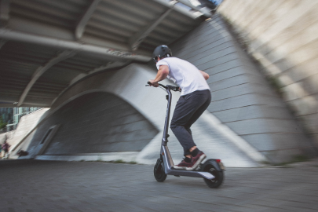
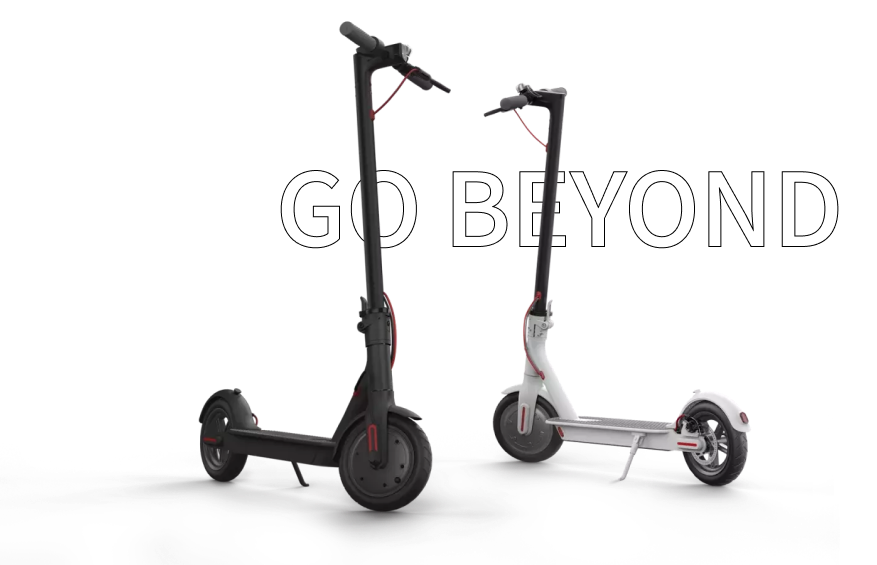

Xiaomi
Electric
Scooter

Mi Electric Scooter is designed for comfortable use
at 100% of its
capabilities!
The frame of the
electric
scooter is made of durable aircraft-grade
aluminum, and its internal structures
are
protected from moisture and